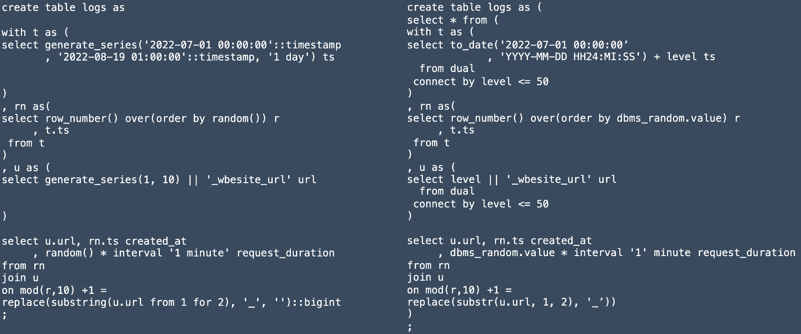
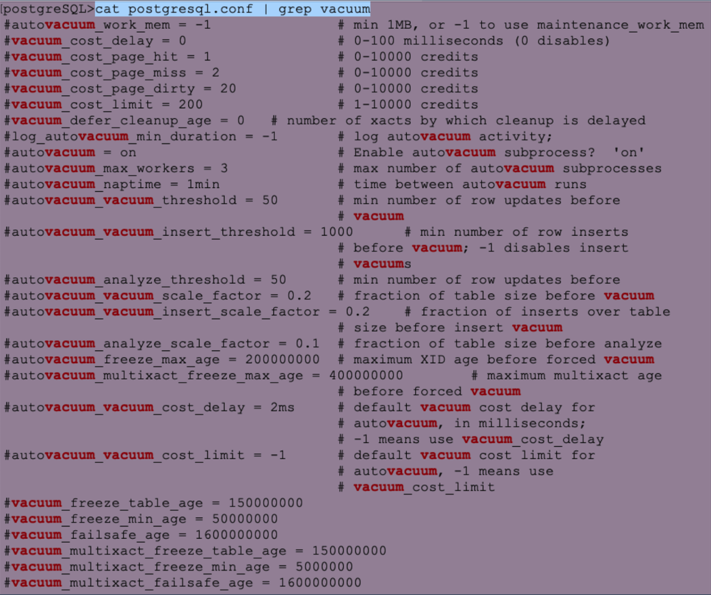
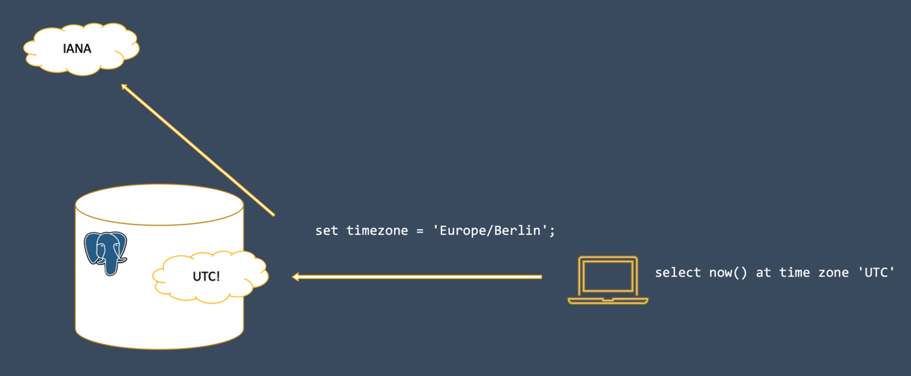

create table demo (
descr text
, col text
);07 February 2024, Jonas Gassenmeyer
Ein Jahr PostgreSQL statt Oracle
Ein Jahr PostgreSQL statt Oracle – Das Leben danach

Vor etwas über einem Jahr hatte ich die Möglichkeit tiefer in die Welt der PostgreSQL Datenbankentwicklung einzutauchen. Ein treibender Gedanke war: "SQL ist SQL - ich werde mich schon schnell zurechtfinden, SQL bleibt schließlich eine Relationale Datenbank". Doch der Teufel steckt bekanntlich im Detail: Die Unterschiede und Herausforderungen, welche wirklich auf einen Oracle-Datenbankentwickler warten, waren mir vorher nicht bewusst. Sowohl Oracle als auch PostgreSQL haben schöne Seiten. Es ist durchaus von Vorteil, beide Systeme ein wenig genauer zu kennen. Dieser Artikel gibt meine Erfahrungen und Eindrücke wieder, die ich nach einem Jahr im PostgreSQL Ökosystem gemacht habe.
Syntaktische Unterschiede
Beginnen wir einfach mit einem create table Befehl.
In meinem Oracle-Modus lege ich Textspalten mit dem Datentypen varchar2 an.
Wenn ich einen solchen Befehl in PostgreSQL absetze, dann erhalte ich die Fehlermeldung SQL Error [42704]: ERROR: type "varchar2" does not exist.
Schon das weist darauf hin, dass man mit den Skripten nicht einfach in "Copy und Paste" Manier auf eine PostgreSQL Datenbank wechseln kann.
Die korrekte Alternative ist in diesem Fall der Datentyp text (s. Listing 1).
Listing 1:
create table in PostgreSQLEntgegen der gängigen Praxis in Oracle, dass man die Zeichenketten-Länge möglichst einschränkt, ist das in PostgreSQL eher untypisch (vgl.[1]).
Möchte man anschließend die erstellte Tabelle im Data Dictionary überprüfen, stellt man den nächsten Unterschied fest:
Die bewährte Struktur dba|all|user_tables gibt es so nicht.
Stattdessen ist das Pendant im sogenannten information_schema Schema unter dem Namen pg_class zu finden.
Objektnamen werden außerdem in Kleinbuchstaben hinterlegt (s. Listing 2).
Listing 2: Data Dictionary Abfrage in PostgreSQL
select *
from pg_class
where relname = 'demo' ;Wie man sieht, ist die analoge Spalte zu user_tables.table_name hier pg_class.relname.
Mir hat es geholfen an die relationale Theorie von Edgar F. Codd zu denken, wo ebenfalls von tupels(=row), relations(=table) und co. die Rede ist.
Der Sprachgebrauch ist im Data Dictionary von PostgreSQL wiederzuerkennen.
Als nächstes soll die Tabelle Demo mittels Insert-Befehl befüllt werden. Zunächst werden dazu zwei Zeilen eingefügt – s. Listing 3.
Listing 3:
NULL vs. leere Zeichenketteinsert into demo (descr, col) values ('1 insert', '');
insert into demo (descr, col) values ('2 insert', null);Anzumerken ist, dass die Spalte col im ersten Befehl mittels leerem String und im zweiten explizit mit NULL befüllt wird.
In Oracle hat das dieselbe Bedeutung, aber in PostgreSQL ist mit dem leeren String etwas anderes gemeint, sodass eine Abfrage mittels where col is null nur eine Zeile zurückgibt.
Das muss man sich mal auf der Zunge zergehen lassen.
Ich möchte nicht wissen, wie viele Applikationen eine explizite NULL-Wert-Behandlung implementiert haben.
Um beide Zeilen im select-Befehl zu erhalten, könnte man die where-Bedingung in where coalesce(col, '') = '' umschreiben. Damit ist es aber nicht getan.
Man muss sich dann auch mit den möglichen Operationen (z. B. String Konkatenation – s. Listing 4) befassen.
Listing 4: Operation mit Zeichenkette und
NULLselect 'test'||null; --ergibt NULL!In Listing 4 mag Ihnen aufgefallen sein, dass die Tabellenangabe from dual fehlt.
Das ist in PostgreSQL valide Syntax – PostgreSQL kennt die Dummy Tabelle dual nicht.
Doch zurück zum eigentlichen Thema: NULL-Werte.
Wenn wir in Oracle einen NULL-Wert an eine Zeichenkette hängen, können wir sicher sein, dass die Zeichenkette wieder ausgegeben wird.
Das ist in PostgreSQL nicht so.
Der gesamte Ausdruck liefert NULL als Ergebnis.
Tatsächlich bin ich mehrfach auf kleine Bugs in meinen Abfragen gestoßen, weil ich aus Gewohnheit falsche NULL-Logiken im Kopf hatte.
Der Artikel von AWS "Handle empty Strings when migrating from Oracle to PostgreSQL" umfasst 13 Seiten und 3300 Worte.
Das zeigt, wie komplex die Unterschiede zwischen beiden Datenbanken alleinig im Bereich NULL-Werte sind.
Listing 5 verdeutlicht einen weiteren Unterschied (der sich in Oracle 23c in Luft auflösen wird): Der Boolean Datentyp existiert und kann in PostgreSQL ohne Einschränkungen in SQL verwendet werden.
Listing 5: Booleans
select '' = '' tst; -- liefert TRUEBisher ist auf der Demo Tabelle kein Primärschlüssel definiert.
Wenn dieser ergänzt und anschließend zwei identische Werte eingefügt werden (s. Listing 6), kommt es zu einer Fehlermeldung.
Im Gegensatz zur generischen Fehlerbeschreibung in Oracle (SQL Error [1] [23000]: ORA-00001: unique constraint (SYSTEM.xyz) violated), enthält die Fehlerbeschreibung in PostgreSQL den tatsächlichen Spaltenwert, der zur Verletzung des Constraints geführt hat (im Beispiel ist das key1).
Gerade bei Bulk-Loads macht das die Suche nach der Nadel im Heuhaufen deutlich einfacher.
Ein kleiner, aber feiner Unterschied.
Listing 6: Primärschlüssel-Verletzung in PostgreSQL
alter table demo add primary key (descr);
insert into demo values ('key1', 'i repeat');
insert into demo values ('key1', 'i repeat');
SQL Error [23505]: ERROR: duplicate key value violates SQL
Detail: Key (descr)=(key1) already exists.Im Kontext von Bulk-Loads und Primärschlüssel-Verletzungen ist in Oracle der merge-Befehl hilfreich.
Dieser ist seit 9i verfügbar und besitzt somit einen gewissen Reifegrad.
In PostgreSQL wurde merge erst im Oktober 2022 mit Version 15 eingeführt.
Damit ist der Befehl nicht ganz ausgereift und noch etwas limitiert.
Genaueres ist dem Syntax Baum in der offiziellen Dokumentation zu entnehmen (https://www.postgresql.org/docs/15/sql-merge.html).
Apropos Dokumentation.
Sowohl Oracle als auch PostgreSQL weisen eine sehr gute Doku auf.
PostgreSQL verzichtet dabei (absichtlich) auf Code-Beispiele, was manchmal weitere Google-Suchen erforderlich macht.
Den Luxus, den Oracle-Base.com bietet, hat man für PostgreSQL nicht.
Wer noch nicht PostgreSQL Version 15 verwendet, dem sei die kleine Schwester des merge-Befehls empfohlen (s. Listing 7).
Hier lässt sich zumindest eine Update-Aktion (oder "Fehler ignorieren") bestimmen, wenn eine entsprechende Constraint-Verletzung vorliegt.
Nicht ganz so mächtig wie der merge-Befehl, aber ich habe häufig darauf zurückgegriffen und fand ihn auch sehr selbsterklärend.
Wirklich vermisst habe ich merge nicht.
Listing 7:
insert on conflict in PostgreSQLinsert into demo values ('key2', 'i repeat') on conflict (descr)
do nothing;
insert into demo values ('key2', 'i repeat')
on conflict (descr) --pk or uk
do update set col = 'i''ve been updated';Man ahnt es schon:
An vielen Stellen wird man sich bei PostgreSQL an kleinere Syntax-Änderungen gewöhnen müssen, die mehr oder weniger einschränkende Funktionalität bedeuten.
Sollte ich nach einem Jahr Vergleich die aktuell bedeutendste Einschränkung nennen, wären das die die Window-Functions.
Diese sind zwar auch zahlreich in PostgreSQL vorhanden, allerdings hat mich Oracle in der Vergangenheit mit Details beeindruckt;
z. B. wird ein select count(distinct …) over(partition by …) mit der Fehlermeldung SQL Error [0A000]: ERROR: DISTINCT is not implemented for window functions zurückgewiesen.
Die Tabelle Demo war bis hierhin ein dankbarer Begleiter zum Aufzeigen der Unterschiede. An dieser Stelle möchte ich ein neues Beispiel einführen, um zu verdeutlichen, dass die Syntax-Differenzen zwischen Oracle und PostgreSQL an vielen Stellen deutlich spürbar sind. Man stelle sich folgenden Datensatz vor: Für eine Webanwendungen ist in einer Tabelle der jeweilige URL-Aufruf mit Dauer und Zeitstempel des Aufrufs getrackt. Ich habe mittels SQL zu Demonstrationszwecken einen solchen Datensatz künstlich erzeugt. Aus Platzgründen erkläre ich die Gegenüberstellung stichpunktartig und nenne die gravierendsten Unterschiede:
-
Common Table Expression (
withKlausel in Kombination mitcreate table) -
Generierung mehrerer Zeilen (
connect bylevel vs.generate_series) -
Teilen von Strings (
substrvs.substringFunktion; siehe auch Parameter) -
Erzeugen von Zufallszahlen (
dbmsPackage vs.random()Funktion) -
Literale beim Erzeugen von Zeitintervallen (
interval '1 minute'vs.interval '1' minute. - Hochkommas beachten!)

Figure 1. Erzeugen von Testdaten Oracle vs. PostgreSQL Syntax
Bevor ich mich anderen Aspekten als den Syntax-Unterschieden widme, möchte ich noch erwähnen, dass auch syntaktisch gleiche Konstrukte zu unerwarteten Ergebnissen führen können:
Ein select 5/2 ergibt in PostgreSQL 2 (Zwei).
Das ist auch so dokumentiert (vgl.[2]), allerdings finde ich den Default ("for integral types, the devision truncates the result towards zero") nach wie vor gewöhnungsbedürftig.
Explizite Casts wie select 5.0/2 oder select 5::float/2 sind mögliche Lösungen, die dann zum Ergebnis 2,5 führen.
Architekturunterschiede
Im zweiten Teil möchte ich noch etwas ins Detail gehen und ein paar markante architektonische Entscheidungen in PostgreSQL beleuchten. Was eine Datenbank grundlegend ausmacht, ist das MVCC (Multi Version Concurrency Control) Prinzip, welches den konkurrierenden Zugriff auf Daten regelt. Wenn eine Transaktion liest, soll sie nicht von einer schreibenden Transaktion geblockt sein und umgekehrt.
Hierzu ist es essenziell, dass Datenänderungen versioniert sind.
Oracle ändert die Daten "inline" im Block.
Es wird um jeden Preis vermieden, dass die physikalische Adresse einer Zeile im Block nochmal wandert.
Das hat z. B. den Vorteil, dass ein Index stets unverändert den Zugriff auf den Block für diese Zeile kennt.
Die eigentlichen Änderungen/Versionen sind im UNDO festgehalten.
In PostgreSQL wird eine Zeile mehrfach kopiert und eine Transaktions-ID steuert, für welche Session die Zeile sichtbar bzw. unsichtbar ist.
Je mehr parallele Transaktionen auf demselben Tupel (=Zeile) operieren, desto mehr Kopien derselben Zeile wird es geben.
Das sorgt folglich für sogenannten Bloat:
Die Tabelle plustert sich auf und verbraucht physikalisch mehr Speicherplatz.
Wenn die älteren Versionen nicht mehr benötigt werden, bleiben überflüssige Versionen einer Zeile übrig.
Ein Hintergrundprozess muss aktiv werden, um aufzuräumen.
Dieser ist unter dem Begriff Vacuum ("Staubsauger") bekannt.
Ich selbst musste diesen Prozess nie tunen.
In OLTP-Systemen mit viel Last sollte man sich jedoch genauere Gedanken machen, wann und wie dieser Hintergrundprozess aktiv werden soll/muss.
Hierzu werden in der zentralen Konfigurationsdatei postgresql.conf diverse Parameter angeboten (s. Abbildung 2).

Figure 2. Mögliche Parameter zum Tunen von Vacuum
Ein viel-gelesener Artikel[3], der die Schwächen von PostgreSQL aufzeigt, behandelt diese "Copy on Write" Versionierung und es wird angemerkt, dass es ein Limit der zu vergebenen Transaktions-IDs gibt.
Bevor ich jemals eine PostgreSQL Datenbank live und in Farbe verwendet hatte, hat mir der Artikel nicht unbedingt Mut gemacht. Allerdings hat sich das im echten "hands-on" OLTP-Betrieb nicht bewahrheitet.
Laurenz Albe hat eine interessante Gegendarstellung zum Transaktions-ID Wraparound Problem verfasst (vgl.[4]).
Im Gegenteil – PostgreSQL hat im Bereich Transaktionen mein Herz gewonnen, weil DDL-Befehle (also z. B. create table) mittels Rollback rückgängig gemacht werden können.
So macht Skripte-Schreiben wirklich Spaß!
Man muss im Fehlerfall nicht aufräumen und komplizierte Workarounds schaffen.
Die Objekt-Änderungen werden einfach nicht commited.
Das Auto-Commit ist in allen gängigen Clients (DBeaver, psql, pgAdmin,…) Standard.
Man muss mittels begin Befehl explizit eine Transaktion aufspannen, um ein implizites Commit zu verhindern.
Das wiederum macht das Ausführen von DML, z. B. einem delete-Befehl, erst einmal ungewohnt riskant.
Wenn man nicht aufpasst, sind die gelöschten Daten wirklich festgeschrieben.
Ein Rollback ist nicht mehr möglich.
In meinem Projekt musste ich intensiv mit Zeitstempeln und Zeitzonen hantieren.
Vor allem, wenn Client und Server nicht mit der gleichen Zeitzone konfiguriert sind, muss es zwangsläufig zu einer Konvertierung kommen, sodass "hin- und zurückgerechnet" werden kann.
Wenn in Oracle ein Zeitstempel im Datentyp timestamptz gespeichert wird, gibt es Bytes, die festhalten in welcher Zeitzone diese Uhrzeitangabe zu verstehen ist.
Was Bit-genau gespeichert wird, hängt von den NLS-Settings von Client und Server ab.
In PostgreSQL gibt es eine simple Regel:
There is no such thing as a server time zone.
Der Server nimmt den Zeitstempel so an, wie es vom Client angegeben wird (entweder indirekt über set timezone in der Session oder direkt am übertragenen String durch die Formatmaske) und konvertiert in jedem Fall in UTC.
Ein lesender Prozess findet anschließend immer Bits auf Platte, die den Zeitstempel in UTC repräsentieren.
Zur Konvertierung nutzt PostgreSQL eine zentrale Datenbank für Zeitzonen – die IANA.

Figure 3. Zeitstempel werden stets in UTC gespeichert
Ein wenig anders verhalten sich in PostgreSQL Client und Server übrigens auch beim Austausch des Zeichensatzes (z. B. Unicode). Aber da die NLS-Settings und UTF-8 Encoding in Oracle einen eigenen Artikel wert wären, möchte ich es lediglich erwähnen.
Zum Thema Zeiten möchte ich außerdem noch knapp erwähnen:
Wer viel mit Zeitstempel-Arithmetik zu kämpfen hat, sollte sich in PostgreSQL auf jeden Fall mit dem tsrange() Datentypen vertraut machen[5].
Ich würde mir ein Pendant in der Oracle Datenbank wünschen.
Performance Troubleshooting
Im letzten Teil widme ich noch ein paar Zeilen einem Thema, welches mich im Oracle Kontext in den Bann gezogen hat.
Performance Troubleshooting ist mit den Oracle Bordmitteln ein echter Zuckerschlecken.
Die Art und Weise wie diese Software instrumentiert ist, ist einzigartig.
Dabei gilt vor allem, dass das Logging per Default eingeschaltet ist;
vornehmlich beziehe ich mich hier auf das Event Tracing und das AWR=Active Workload Repository, worauf dann auch die ASH=Active Session History basiert.
Somit liegen die relevanten Informationen förmlich auf dem Tisch und man ist nur mit der eigentlichen "Detektiv-Arbeit" beschäftigt.
Ich weiß nicht, bei wie viel Gigabyte eine Oracle-Installation inzwischen angekommen ist.
Zwar ist eine PostgreSQL Vanilla-Version deutlich schlanker, das macht sich dann aber genau an solchen Features bemerkbar.
Der Weg in der PostgreSQL-Welt führt dann über sogenannte Extensions.
Diese sind nachträglich zu installieren.
Somit ist zumindest eine Vanilla-Installation sorgfältiger zu planen.
Ich habe sogar verstärkt wahrgenommen, dass bei Admins und Experten häufig noch der Performance-Nachteil ("Workloads laufen 2% langsamer") der Gesamtinstallation als Argument aufgeführt wird, weshalb man intensives Logging nicht per Default aktiviert.
Hier halte ich es wie Tom Kyte[6]. In allen Umgebungen, in denen ich aktiv war, wurden hilfreiche Instrumentations-Mechanismen nicht aktiviert, sodass die Suche bei erstmalig aufgetretenen Performance-Schwierigkeiten knifflig bis unmöglich war.
Die Metriken für eine detaillierte Analyse waren schlichtweg nicht vorhanden.
Nach meinem ersten Jahr kann ich folgenden Ansatz empfehlen:
Um proaktiv und nachträglich Langläufer im SQL zu identifizieren, sollte die Extension pg_stat_statements installiert werden. Es handelt sich dann um eine View, die mittels SQL-Abfragen analysierbar ist.
Diese hat einige Schwächen, z. B. dass statt dem echten SQL-Statement eine normalisierte Form gezeigt wird.
Literale werden durch Bind-Variablen ersetzt und die Belegung der Binds kann nicht mehr nachvollzogen werden.
Das lässt keine Einzelfallbetrachtung zu.
Deswegen sollte zusätzlich auch auto_explain geladen werden.
Damit werden in den Server-Logs mehr Infos rund um ein SQL (inklusive ermitteltem Ausführungsplan) weggeschrieben.
Der Schwellenwert, ab welcher Laufzeit ein SQL geloggt wird, lässt sich konfigurieren (auto_explain.log_min_duration). Hat man mit der breiten Analyse den Langläufer identifiziert, kann man folglich auf die Server-Logs zurückgreifen, um mehr Infos zu erhalten.
Wenn das Problem reproduzierbar ist, kann man in PostgreSQL leider kein echtes Tracing der Session aktivieren.
Die Extension pg_show_plans erlaubt es, zumindest aus einer zweiten Session heraus, in eine Langläufer-Session reinzuspicken, um den Ausführungsplan der laufenden Abfrage zu sehen.
Im Fall, dass das Problem reproduzierbar ist, gibt es auch kein Sampling, wie man es von der ASH kennt.
Ich finde jedoch, dass die Extension pg_sentinel vielversprechende ASH-ähnliche Ansätze beinhaltet.
Um dann ein Statement wirklich anzupacken und dem Optimizer unter die Arme zu greifen, kann man nur auf Hints zurückgreifen, wenn die Extension pg_hint_plan installiert wird.
Diese hat auch eine Funktionalität ähnlich zu Baselines.
Baselines werden in Oracle auf Basis der SQL_ID erstellt, welche auch im Library Cache abgelegt wird.
PostgreSQL hat keine SGA und damit auch keinen Library Cache.
Deshalb bringen Bind-Variablen auch nur Performance-Vorteile in der gleichen Session.
Session-übergreifend können geparste SQL-Befehle nicht mit einem Softparse wiederverwendet werden.
Es gibt die Möglichkeit von Prepared Statements, die das mehrfache Ausführen desselben SQLs innerhalb einer Session beschleunigen. In der Ausgabe 01-2021 des Red Stack Magzins hat Herve Schweitzer einen eigens diesem Thema gewidmeten Artikel geschrieben[7] - sehr empfehlenswert!
Fazit
Der vorliegende Artikel kann nur begrenzt technische Feinheiten beschreiben, die dann für die wirklichen Unterschiede zwischen den beiden Datenbanken sorgen. Es wurden Syntax- und Architektur-Unterschiede betrachtet - das Wort Migration wurde von mir beispielsweise komplett ausgespart. Für mich ist klar, dass ich mich nach einem Jahr nicht für Oracle oder PostgreSQL entscheiden kann/will und für einen Umstieg plädiere! Für mich gilt: "Kenne beide Seiten und bleibe in Übung". Wenn jedoch keine Gründe dagegensprechen, starten Sie neue Projekte mit PostgreSQL und probieren Sie es aus. Ich freue mich auf Ihr Feedback.
Oracle PostgreSQL database SQL developer
Feedback
Was this page helpful?
Glad to hear it! Please tell us how we can improve.
Sorry to hear that. Please tell us how we can improve.